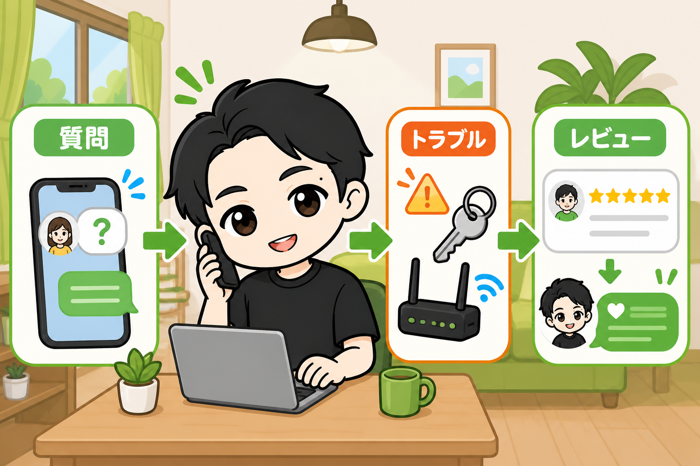
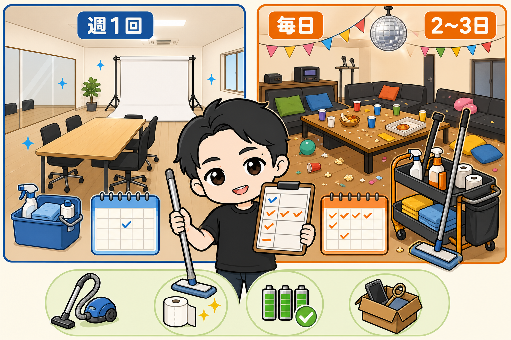
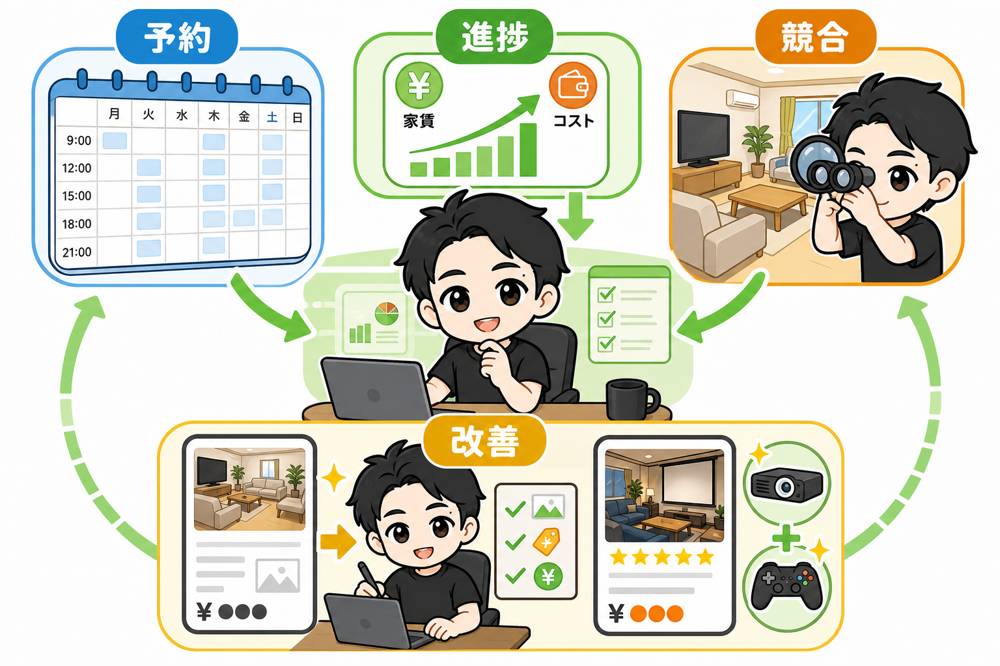
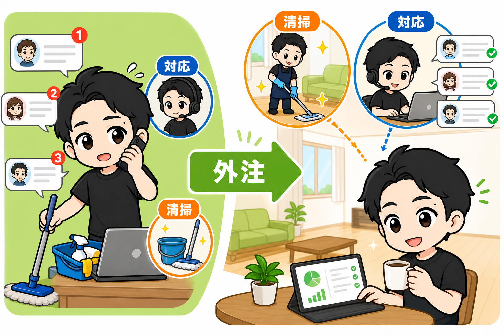

レンタルスペースをオープンした後の仕事は、大きく3つだけです。
開業までの情報は、世の中にたくさんあります。
物件の探し方、内装のやり方、ポータルへの載せ方。
でも「開業した後、毎日何をするのか」を説明している情報は、ほとんどありません。
ぼくはこれまで23部屋を運営しています。
やっていることを全部書きます。
① 顧客対応 — 質問、トラブル、そしてレビュー

1つ目は、お客様対応です。
予約の前に「テレビでNetflix見れますか?」「ゲームソフトはなんですか？」と質問が来ます。
予約の後にも来ます。
それに答えます。
トラブル対応もあります。
鍵が開かない。Wi-Fiがつながらない。
連絡はポータルのメッセージ、メール、ショートメッセージ、ときどき電話です。
そしてもう1つ、大事なのがレビューです。
ご利用後、こちらからお客様に星5のレビューを送ります。
「この度はありがとうございました。またのご利用をお待ちしております」
レビューを送ったあと、追ってメッセージも送ります。
「お客様に星5を付けさせていただきました。よろしければ、私どもにもレビューをいただけたら嬉しいです」
返報性の原理が働いて、星5がもらいやすくなります。
もらったレビューには、返信もします。
「嬉しいお言葉ありがとうございます」の一言でいい。
ポータル上で、お客様に寄り添っているスペースに見えます。
次に予約を検討する人は、そのやり取りまで見ています。
② 掃除 — 頻度はジャンルで決まる

2つ目は、掃除です。
どれくらいの頻度で入るのか。
これはジャンルで変わります。
会議室・ダンス・撮影は、汚れが出にくい。
週1回で回ります。
パーティースペースは、激しく使われます。
毎日、もしくは2〜3日に1回。
徹底している人は、利用のたびに毎回入ります。
掃除機がけ、整理整頓、トイレットペーパーの補充。
機器の故障チェック、電池交換。
忘れ物があれば保管して、写真を撮っておきます。
お客さまから問い合わせが来たら案内します。
③ 状況確認と対策 — 数字と競合を見て、実行する

3つ目は、状況の確認です。
見るものは3つあります。
予約状況。
Googleカレンダーを毎日見ます。
どの曜日、どの時間帯が空きがちか。傾向を掴みます。
進捗。
家賃、水道光熱費、Wi-Fi、広告費。
毎月かかる金額を超えて、利益が出ているか。
前月と比べてどうか。季節で動くジャンルなら前年同月とどうか。
「今月はこの部屋で15万円」と目標を決めたら、そこへの進捗を見ます。
競合。
同エリアの競合店舗を、チェックします。
競合に予約が入って、うちに入っていない日はないか。
新しい競合が増えていないか。
増えていたら、設備・内装・コンセプト・写真・価格まで見ます。
既存の競合の変化も見ます。
「あれ、価格をこまめに変えてるな」に気づけるのは、定点で見ている人だけです。
そして、確認した状況から一手を打ちます。
ポータルサイトのリスティングを修正する。
価格プランを変える。単価を上げ下げする。
タイトルの訴求を変える。写真を撮りなおす。説明文をお客様のニーズに合わせて書き直す。
定期的に内装や備品も見直します。
話題のSwitchソフトを置いてみる。プロジェクターを足す。
年季が入ってきたら、壁紙を張り替える。
状況を確認して、どこに問題があるかを捉えて、要因を考えて、一手に移す。
この繰り返しです。
まとめ: オープン後の中心は「顧客対応と掃除」。そして両方、手放せる

開業後の仕事は3つ。
- 顧客対応(質問・トラブル・レビュー)
- 掃除と備品補充
- 状況確認と一手
このうち毎日の中心は、①の顧客対応と②の掃除です。
そして、この2つは外注できます。
掃除の外注は、1回1,000〜1,500円が相場です。
顧客対応も、月数万円から外注が可能です。
外注してしまえば、普段やることは、どんどん少なくなります。
レンタルスペースが「手離れのいい副業」と言われる理由は、開業後のこの構造にあります。
▼もう1つの副業、AI社員だけのeBay輸出店の実録🐹
https://note.com/cham_ebay
▼ブログ(レンスペ×eBay、全記事まとめ)
https://rental-space.net